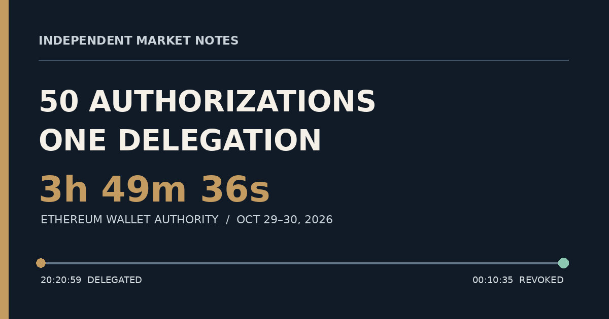

Binance's Four-Hour Wallet Takeover: 50 Authorizations, One Malicious Delegation, and a Delayed Revocation
The chain records the takeover and its end to the second. It cannot tell us why the emergency response took nearly four hours.

The revealing number in the Binance wallet compromise is not the multibillion-dollar loss. It is one: one valid authorization hidden among 50 submitted signatures, sufficient to hand execution authority over an exchange hot wallet to a different contract. That authority remained in place for almost four hours before a successful on-chain revocation.
There are two distinct stories here. One is visible on Ethereum, where transactions have block numbers, timestamps and authorization records. The other happened inside Binance: the detection alerts, decisions, signing controls and emergency procedures. The first story is unusually precise. The second remains largely dependent on Binance's account. Confusing the two would make this investigation sound more certain than the evidence allows.
My central conclusion is narrower—and more consequential—than saying a particular wallet technology failed. Stopping ordinary withdrawals is not the same as extinguishing delegated on-chain authority. The Binance 14 incident illustrates that separation with remarkable clarity.
The transaction that changed the wallet's authority
At , an Ethereum type-4 transaction in block 26,300,753 submitted 50 EIP-7702 authorizations for the address commonly labeled Binance 14: 0x28C6c06298d514Db089934071355E5743bf21d60. Public address metadata identifies the wallet as a Binance hot wallet; such labels are third-party attribution, not consensus-level proof of ownership.
The authorizations targeted the same delegation address, 0x63e842B054Bd624a465454D533C33F573e9c6fAe. Their nonces formed a consecutive range from 18,914,775 to 18,914,824. Forty-nine were rejected with an invalid_nonce status. One—nonce 18,914,809—was accepted.
That distinction matters. Fifty entries did not mean 50 successful delegations. The batch offered many candidate nonces against a busy account; only one had to match. The transaction record demonstrates the result. It does not establish precisely how the signatures were obtained.
Three minutes later, assets began moving
At , another transaction in block 26,300,770 called Binance 14 from the same operator address that submitted the delegation: 0x7C8601d4645b93cea45F71e118A729332e6B5CA0.
The transaction's token-transfer records include approximately 1.6154 billion USDT moving from Binance 14 to 0x5227f603C1eE34CE3c06eFe6477003BDfCCB2f8c. Records also identify transfers of RLUSD, WBETH, XAUT and UNI to that recipient. These are historical token quantities, not estimates of their current dollar value. The complete multichain loss and the full inventory of this sweep are not established by this subset of records.
For readers accustomed to ordinary exchange withdrawals, this is the essential technical turn. The operator was not merely clicking a withdrawal button. A delegated execution path could invoke wallet behavior on-chain. Disabling a customer-facing withdrawal service does not automatically revoke an authorization that Ethereum itself still recognizes.
What EIP-7702 does—and does not explain
EIP-7702 allows an externally owned Ethereum account to authorize execution through contract code. The authorization carries an account identity, a chain identifier, a nonce and a target address. A later authorization targeting the zero address can clear the delegation.
That is a designed capability, not proof of a protocol vulnerability. It can support useful wallet behavior; it also means that whoever obtains a valid authorization may alter how the account executes. The relevant security question is who could authorize the change, which policies constrained it, and how quickly the owner could undo it.
Binance's preliminary report describes a longer intrusion beginning with compromised developer devices, fraudulent recruitment activity, stolen credentials and access to wallet-signing infrastructure. It says an internal AI tool was used during lateral movement. Those details are material, but they are company-reported incident findings, not conclusions independently recoverable from Ethereum transaction history.
The final drain and the revocation
The late-stage evidence is particularly stark. At , records show approximately 2,961.99 ETH arriving at Binance 14. At , a successful transaction in block 26,301,828 produced an internal transfer of 2,961.910820938285 ETH out of that wallet.
The incoming transfer's operational purpose is not established. It would be unjustified to claim Binance knowingly routed deposits into a compromised address. What the sequence does show is that assets were still leaving the delegated wallet shortly before the final revocation.
At , Binance 14 sent a successful type-4 transaction in block 26,301,896 to itself. Its authorization list specified the zero address as the delegation target. The transaction nonce was 18,914,903; the authorization nonce was 18,914,904. That next-nonce relationship is consistent with EIP-7702's rules.
The successful zero-address authorization confirms the reported revocation mechanism at transaction level. It does not, without a separate historical code-state comparison, independently establish every byte of the account's before-and-after code state.
| Event | Timestamp | Block | Evidence |
|---|---|---|---|
| Delegation accepted | Oct 29, 20:20:59 | 26,300,753 | One valid authorization among 50 |
| Initial token sweep | Oct 29, 20:24:23 | 26,300,770 | Successful token transfers |
| Late ETH outflow | Oct 29, 23:56:47 | 26,301,828 | 2,961.910820938285 ETH internal transfer |
| Zero-address revocation | Oct 30, 00:10:35 | 26,301,896 | Successful EIP-7702 authorization |
Four hours of delegated authority is not four hours after detection
From the accepted delegation at 20:20:59 UTC to the successful revocation at 00:10:35 UTC, 3 hours, 49 minutes and 36 seconds elapsed. That is a measured blockchain interval. It should not be renamed an incident-response delay after detection.
Binance says it detected unusual transfers, suspended withdrawals and worked to revoke the malicious permission. But the exact alert timestamp, the point at which responders understood the delegation mechanism, and the chronology of attempted countermeasures are not established by the transaction records. The difference is not semantic. Without those times, nobody outside the incident team can calculate a reliable detection-to-revocation interval.
Was this a failure of emergency readiness?
There is a tempting verdict: the exchange lacked a ready-to-run revocation procedure. Binance's own description says its multi-party computation signing arrangement complicated the response and that a specialized procedure was developed. That makes emergency readiness a serious line of inquiry. It does not settle the case.
One possibility is that no tested emergency path existed. Another is that a path existed but could not safely satisfy signing policies, nonce requirements or compromised-system isolation under the circumstances. A third is that responders deliberately sequenced containment and validation before submitting a revocation. These explanations carry different implications for governance and engineering quality.
The 50-authorization batch demonstrates why nonce management matters: the attacker prepared a range of candidate nonces against a busy wallet. But it does not establish that nonce contention caused the nearly four-hour interval. Internal signing logs, runbooks, escalation records and rejected revocation attempts would be needed to determine that.
Nor would it be sound to declare multi-party computation inherently insecure. MPC may reduce the risk of a single stolen key. Its usefulness in a crisis depends on whether the organization can exercise the necessary authority quickly, safely and under attack. A custody architecture can be resistant to theft yet operationally difficult to recover.
Attribution is not the same as transaction proof
The FBI attributed the operation to North Korea-linked TraderTraitor activity and published associated addresses. That is a significant government finding. The public advisory does not disclose all the intelligence behind the attribution, so the chain records alone should not be presented as proof of an operator's nationality or organizational identity.
There is also a distinction between the initial operator address, the wallet whose authority was delegated, the first token recipient and downstream consolidation addresses. The initial operator and recipient are visible in the transaction records cited here. A complete reconciliation of all FBI-listed addresses and the subsequent laundering graph remains outside the demonstrated transaction path. That gap matters when estimating how much was recovered, frozen or still movable.
What the breach says about custody
Binance reported an overall incident impact of approximately $6.34 billion and about $2.85 billion frozen or intercepted as of its November 3 account. Those are company estimates, not a fully reconciled independent asset-and-liability ledger. Freezing assets is not equivalent to returning them to customers, and replenishing a balance does not by itself establish how the replacement was funded. For the broader financial and governance consequences, see Crypto’s November Stress Test.
The lesson I draw from the Ethereum evidence is about control boundaries. A customer withdrawal switch, a signing policy, an on-chain authorization and an emergency revocation are different systems. In calm conditions, they may appear to act as one. During an intrusion, the gaps between them become the attack surface.
A stronger custody standard would therefore ask not only whether an attacker can steal a signing credential, but whether an exchange can demonstrate a rehearsed, independently authorized path to extinguish compromised execution authority. That is a question for exchange operators, auditors and customers alike. It is not a claim that every wallet using EIP-7702 faces the same risk.
The unanswered question is the one that matters most
The public blockchain tells us when authority changed, which authorization succeeded, what moved in the sampled transactions and when the zero-address revocation executed. It does not tell us what Binance's responders knew at each minute, what they tried, or which constraints were unavoidable.
That is where the next credible investigation belongs: a documented comparison between the first alert, the first recognition of malicious delegation, the first feasible revocation attempt and the final successful transaction. Such evidence could strengthen the emergency-readiness criticism—or materially weaken it.
For now, the strongest conclusion is also the most useful one. A wallet can be administratively frozen while its delegated on-chain authority remains active. Binance 14's recorded history makes that risk concrete. The unresolved issue is not whether the delegation lasted nearly four hours. It is why terminating it took that long—and whether the next exchange facing the same problem will be ready sooner.
Sources and verification notes
Transaction timestamps are historical Ethereum block timestamps in UTC. Incident-level explanations, aggregate losses and recovery figures are attributed to the reporting organizations identified below. The chain records cited here support the specific authorization and transfer observations, not a complete forensic accounting of the multichain incident.
- Binance, preliminary incident report (November 3, 2026) — company account of intrusion and containment.
- FBI, TraderTraitor advisory (October 31, 2026) — government attribution and published addresses.
- Ethereum Improvement Proposal 7702 — protocol rules for delegation and revocation.
- Ethereum transaction: initial authorization, block 26,300,753.
- Ethereum transaction: initial token sweep, block 26,300,770.
- Ethereum transaction: late ETH transfer, block 26,301,828.
- Ethereum transaction: zero-address revocation, block 26,301,896.
- Independent Market Notes, Crypto’s November Stress Test — related investigation of recovery and custody risk.